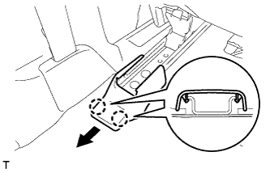
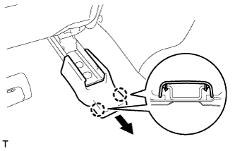
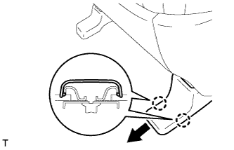
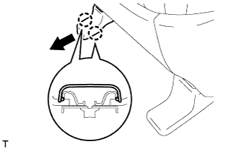
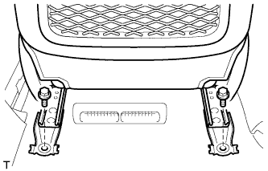
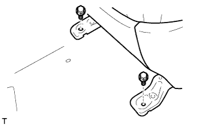

FRONT SEAT ASSEMBLY (for Power Seat) > REMOVAL |
| 1. REMOVE FRONT SEAT HEADREST ASSEMBLY |
| 2. REMOVE REAR OUTER SEAT TRACK BRACKET COVER LH |
Operate the power seat switch (slide switch) to move the seat to the foremost position.
 |
Using a screwdriver, detach the 2 claws and remove the cover.
| 3. REMOVE REAR INNER SEAT TRACK BRACKET COVER LH |
 |
Using a screwdriver, detach the 2 claws and remove the cover.
| 4. REMOVE FRONT OUTER SEAT TRACK BRACKET COVER LH |
Operate the power seat switch (slide switch) to move the seat to the rearmost position.
 |
Using a screwdriver, detach the 2 claws and remove the cover.
| 5. REMOVE FRONT INNER SEAT TRACK BRACKET COVER LH |
 |
Using a screwdriver, detach the 2 claws and remove the cover.
| 6. REMOVE FRONT SEAT ASSEMBLY LH |
Disable the Autoaway/Return function by changing the customize parameter (Click here).
Turn the engine switch on (IG). Operate the tilt and telescopic switch to fully retract and tilt up the steering column assembly.
Turn the engine switch off.
 |
Remove the 2 bolts.
Operate the power seat switch (slide switch) to move the seat to the foremost position.
 |
Remove the 2 bolts.
Operate the power seat switch (slide switch) and move the seat to the center position, and operate the power seat switch (reclining switch) and move the seatback to the upright position.
Disconnect the cable from the negative (-) battery terminal.
Disconnect the connectors under the seat.
Remove the front seat assembly.